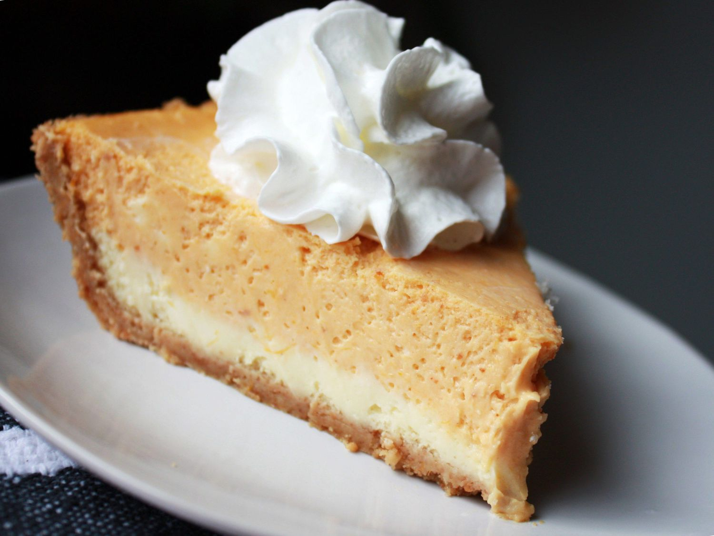

Double Layer Pumpkin Cheesecake

Description
This pumpkin cheesecake is a great alternative to traditional cheesecake — especially for pumpkin pie fans!
A thick, creamy cheesecake base topped with a layer of spiced pumpkin cheesecake filling sits on a graham
cracker crust in this easy layered holiday dessert. Two flavors of cheesecake in every bite! Serve with a
scoop of vanilla ice cream or a dollop of whipped cream.
Ingredients
- Cream Cheese
- White Sugar
- Vanilla Extract
- Eggs
- Graham Cracker Crust
- Pumpkin Puree
- Ground Cinnamon
- Ground Cloves
- Ground Nutmeg
Directions
- Gather the ingredients. Preheat the oven to 325 degrees F (165 degrees C).
- Make cheesecake layer.
- Spread batter in the graham cracker crust.
- Make pumpkin layer.
- Spread on top of plain cheesecake batter in the crust.
- Bake in the preheated oven.
- Let rest, refrigerate before serving.